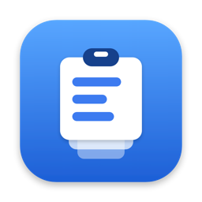

macOS가 숨겨 둔 디스플레이 제어를, 메뉴 막대 패널 하나에
macOS가 내장 화면에만 남겨 둔 기능을 책상 위 모든 모니터로 —— DDC를 통한 실제 밝기 조절, 또렷한 HiDPI 스케일링, 그리고 어디서나 작동하는 밝기 키.
macOS 26 · Apple 실리콘 · MIT 라이선스 · Pro 등급도, 라이선스 키도 없음
세 가지가 작동하지 않습니다
Mac에 모니터를 연결하면 밝기 키는 아무것도 조절하지 못하고, 해상도 목록은 흐릿한 선택지 몇 개만 보여 주며 또렷한 모드는 숨깁니다. 게다가 모든 디스플레이를 한 번에 조절할 방법이 없습니다. Candela는 이 세 가지를 되돌려 줍니다 — 환경설정 창이 아니라 제어 센터처럼 동작하는 패널로.

백라이트까지 닿는 밝기
- 영상 케이블을 통한 DDC/CI —— 모니터 자체 버튼이 쓰는 것과 같은 경로
- DDC를 거부하는 디스플레이는 감마 디밍으로 대체되며 Software로 표시됩니다
- 응답하는 모니터라면 음량도 같은 패널에서

어떤 디스플레이에서도 작동하는 밝기 키
- 포인터를 따라가거나, 모든 디스플레이를 조절하거나, 전부를 하나처럼 조절
- 원하는 디스플레이에만 적용해 TV나 색이 중요한 패널은 건드리지 않을 수도 있습니다
- 손쉬운 사용 권한 하나면 되고, 재시동은 필요 없습니다

어떤 모니터에서도 또렷한 HiDPI
- macOS가 서드파티 디스플레이에서 숨기는 2× 렌더링 모드
- 1440p나 4K 패널이 가독성과 선명함 중 하나가 아니라 둘 다를 얻습니다
- 주사율도 같은 페이지에 있어, 스케일링 때문에 조용히 60 Hz로 떨어지는 일이 없습니다

서로 맞아떨어지는 디스플레이
- 책상 전체를 슬라이더 하나로
- 여기에 디스플레이마다 눈으로 맞추는 하한값을 더합니다 —— 같은 퍼센트라도 두 패널이 같은 빛을 내지는 않으니까요
- 옆 화면은 아직 켜져 있는데 한쪽만 캄캄해지는 일이 없습니다

프리셋, 배열, 가상 화면
- 해상도·밝기·배열을 포함한 책상 전체를 저장하고 클릭 한 번으로 복원
- 시스템 설정을 열지 않고 디스플레이 위치를 드래그로 조정
- 녹화용 가상 화면을 만들거나 Sidecar로 iPad를 연결
무료이고, 상위 등급도 없습니다
Pro 등급도, 라이선스 키도, 하루 사용 제한도, 잠가 둔 기능도 없습니다. 앱 전체가 MIT 라이선스이고 소스는 GitHub에 있습니다. 쓸모가 있었다면 Ko-fi가 있지만, 한 번도 누르지 않아도 앱에서 달라지는 것은 없습니다.
이것이 다른 선택지와의 가장 큰 차이입니다. BetterDisplay는 무료 등급도 훌륭하지만 유연한 HiDPI 스케일링, 가상 화면, 디스플레이 연결 해제, 고급 단축키는 21.99달러의 Pro에 남겨 둡니다. Lunar는 오픈 소스이고 평생 라이선스가 23달러이며, 무료 빌드는 밝기 조절이 하루 100회로 제한됩니다. 둘 다 좋은 소프트웨어입니다. "어떤 기능을 쓸 수 있나"라는 질문에 대한 Candela의 답은 그냥 "전부"입니다.
전체 비교 읽기 →(영어)
여기서 시작하세요
아래 가이드는 현재 영어와 중국어 간체로 제공됩니다:
- 외장 모니터가 흐릿할 때 —— 1440p나 4K에서 글자가 뭉개져 보이는 이유와 실제로 효과가 있는 해결책
- Mac에서 HiDPI 켜기 —— HiDPI란 무엇이며, macOS가 제안하지 않는 디스플레이에서 켜는 방법
- 외장 모니터에서 밝기 키 쓰기 —— 어떤 디스플레이에서든 F1·F2를 쓰기 위한 권한
- 여러 모니터의 밝기 동기화 —— 책상 전체를 슬라이더 하나로, 그리고 실제로 맞추는 방법
두 가지 방법
DMG를 내려받아 Candela를 응용 프로그램으로 끌어다 놓거나 Homebrew를 씁니다:
brew install --cask iamzifei/tap/candela
Candela는 Developer ID로 서명되고 Apple의 공증을 받았기 때문에 오른쪽 클릭으로 우회할 필요 없이 열립니다.
필요한 것
- macOS 26 이상
- Apple 실리콘
- 밝기 키에는 손쉬운 사용 권한 하나가 필요하며, 기능을 처음 켤 때 macOS가 묻습니다
- 외장 디스플레이의 하드웨어 밝기에는 모니터 자체 OSD 메뉴에서 DDC/CI가 켜져 있어야 합니다. 대부분의 모니터는 기본으로 켜져 있지만, 일부 기종과 일부 USB-C 독은 이 채널을 전달하지 않습니다
같은 메뉴 막대의 다른 두 앱

ClipStack 복사한 것은 모두 남습니다. ⇧⌘V로 여는 검색 가능한 클립보드 기록 —— 텍스트, 이미지, 파일, 자주 쓰는 항목은 고정. 아무것도 Mac을 떠나지 않습니다. 무료, MIT, Apple 실리콘 네이티브.